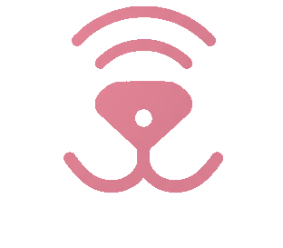

04 · Лісова зелень
05 · Індиго з персиком
06 · Бурштин мінімал
11 · Троянда з нафтовим синім
12 · Нафтовий синій + ліс
13 · Сірі відтінки
14 · Синій, ліс, троянда на сірому
Брендбук · варіант 14 · основна тема 12 + сіра шкала
Нафтовий синій, ліс і троянда · сірі поверхні
Основна тема без змін: нафтовий синій, ліс і троянда. Різниця лише в парі — троянда тепер лежить на нейтральних сірих поверхнях: рожевий текст і рожеве коло кнопки на сірому тлі, а не на рожевому. Троянди в інтерфейсі стало значно менше, тому вона читається як справжній акцент, а не як другий фон.
Логотип у кольорах теми
Основний — нафтовий синій
KnowSnout
Зелений — для «здоров'я» й безпеки

KnowSnout
Троянда й білий — на темному
Іконка-плитка · варіанти
Біла плитка
синій знак
синій знак
Зелений тінт
зелений знак
зелений знак
Рожевий тінт
рожевий знак
рожевий знак
Синя плитка
білий знак
білий знак
Зелена плитка
білий знак
білий знак
Темна плитка
рожевий знак
рожевий знак
Плитка: радіус 30% сторони, знак займає ~70% плитки, тінь м'яка й коротка. У шапці екрана — 44px, як застосунковий значок — 64px і більше.
Палітра
Нафтовий
#122A4C
#122A4C
Лісова зелень
#2F5233
#2F5233
Троянда
#E8879A
#E8879A
Рожевий тінт
#F4DADF
#F4DADF
Зелений тінт
#E3E9DF
#E3E9DF
Тло
#F4F3F1
#F4F3F1
Глибокий
#0C1C33
#0C1C33
Grey 100
#F2F2F2
#F2F2F2
Grey 200
#E5E5E5
#E5E5E5
Grey 300
#CDCDCE
#CDCDCE
Grey 400
#A9A9AB
#A9A9AB
Grey 500
#7E7E81
#7E7E81
Grey 600
#5C5C5F
#5C5C5F
Grey 700
#2C2C2E
#2C2C2E
Розподіл ролей: синій — навігація, заголовки, основні дії. Зелений — «добре / безпечно / в нормі». Троянда — лише текст, коло кнопки та дрібні акценти, завжди на сірій поверхні. Сірий (100–700) — поверхні, роздільники, неактивні таби, другорядний текст. Пропорція троянди в UI: одиниці відсотків площі.
Кнопки й компоненти
Зберегти→
Скасувати
Все в нормі
Деталі
Основна кнопка зберігає форму з варіанта 11: пілюля з рожевим колом-стрілкою на сірій поверхні. Зелена — для підтверджувальних, «здорових» дій.
Безпечно
Уважно
4.3
Собаки
72%
38%
Manrope 800 · Inter
Правила читабельності
Текст і контраст
Світла троянда #E8879A і зелень #2F5233 у базовому вигляді — тільки для заливок, іконок і графіки. Для тексту завжди темний крок: троянда #9E3550, зелень #24401F. Кожна пара тексту й тла — не менше 4.5:1.
Розміри й цілі
Мінімальний розмір інтерфейсного тексту — 11px, підписи під показниками — 11px, не менше. Рядки списків і кнопки — від 44px висоти. Дрібніше не використовуємо навіть у щільних блоках.
Стан не тільки кольором
Активний таб позначається кольором і жирністю водночас; статуси мають слово («Безпечно», «Уважно»), а не лише плашку. Так стан читається і в ч/б, і при дальтонізмі.
Пропорція акценту
Троянда — одиниці відсотків площі екрана: коло кнопки, одна цифра, один статус. Поверхні під нею — нейтральний сірий. Синій тримає структуру, зелень несе «в нормі».
Уважно · 5.4:1
Безпечно · 9.3:1
4.3 · 14.4:1
Нейтрально · 12.5:1
Приклади екранів
Дашборд
Привіт, Марто
47
Перевірок
92%
Безпечно
3
Улюбленці
Останні перевірки
Brit Care Adult Lamb
Сьогодні
Монстера
Вчора
Сканувати корм
Штрихкод
Рослини
Перевірити
Порода
За фото
Порівняти
2 корми
Сканувати корм→
Результат сканування
Brit Care Adult Lamb
4.3Склад без штучних консервантів. Основне джерело білка вказане першим — добрий знак.
Показники
Білок 26%Добре
Жири 14%Норма
ЗерновіУважно
Склад
Ягня дегідратоване, 26%
ДобреРис, батат
НормаКукурудзяний глютен
УважноЛососева олія, вітаміни
Добре
Зберегти→
Порівняти
Профіль улюбленця
Тукан
Вельш-корґі · 3 роки
12,4 кгЩеплення в нормі
Щеплення
Наступне за 42 дні
Улюблений корм
Brit Care Adult Lamb
Документи
Паспорт, чип
Фотоальбом
24 фото
Ігри й активності
6 ідей для корґі
Алергії та обмеження
Курятина
Додати запис→